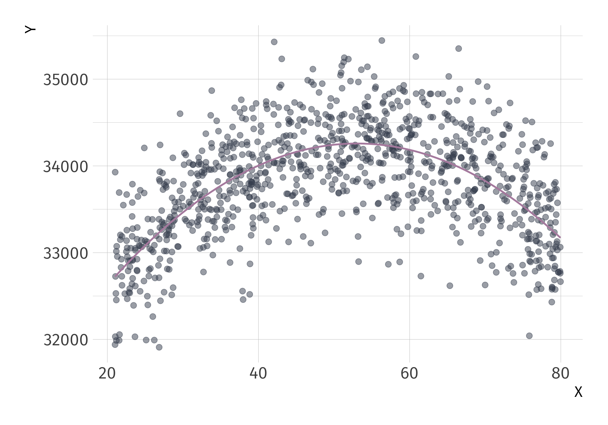
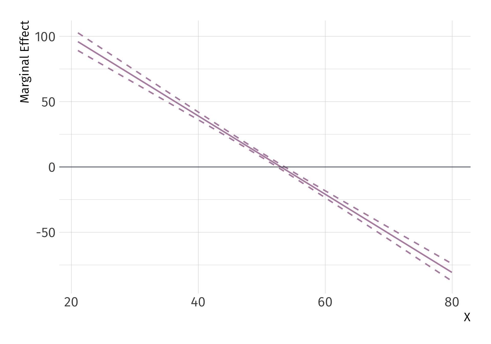

EC 320, Set 08
Spring 2023
PS04:
LA07:
Reading: (up to this point)
ItE: R, 1, 2, 3, 4
MM: 1, 2
Suppose we would like to estimate the degree to which an increase in GDP correlates with Life expectancy. We set up our model as follows:
\[ {\text{Life Expectancy}_i} = \beta_0 + \beta_1 \text{GDP}_i + u_i \]
Using the gapminder, we could quickly generate estimates to get at the correlation But first, as always, let’s plot it before running the regression
Visualize the OLS fit? Is \(\beta_1\) positive or negeative?
Using the gapminder, we could quickly generate estimates for
\[ \widehat{\text{Life Expectancy}_i} = \hat{\beta_0} + \hat{\beta_1} \cdot \text{GDP}_i \]
Fitting OLS. But are you satisfied? Can we do better?
Up to this point, we’ve acknowledged OLS as a “linear” estimator.
Many economic relationships are nonlinear.
The “linear” in simple linear regression refers to the linearity of the parameters or coefficients, not the predictors themselves.
OLS is flexible and can accommodate a subset of nonlinear relationships.
Put different, independent variables can be a linear combination of the parameters, regardless of any nonlinear transformations
Linear-in-parameters: Parameters enter model as a weighted sum, where the weights are functions of the variables.
Linear-in-variables: Variables enter the model as a weighted sum, where the weights are functions of the parameters.
The standard linear regression model satisfies both properties:
\[Y_i = \beta_0 + \beta_1X_{1i} + \beta_2X_{2i} + \dots + \beta_kX_{ki} + u_i\]
Which of the following are an example of linear-in-parameters, linear-in-variables, or neither?
1. \(Y_i = \beta_0 + \beta_1X_{i} + \beta_2X_{i}^2 + \dots + \beta_kX_{i}^k + u_i\)
2. \(Y_i = \beta_0X_i^{\beta_1}v_i\)
3. \(Y_i = \beta_0 + \beta_1\beta_2X_{i} + u_i\)
Which of the following are an example of linear-in-parameters, linear-in-variables, or neither?
1. \(\color{#A3BE8C}{Y_i = \beta_0 + \beta_1X_{i} + \beta_2X_{i}^2 + \dots + \beta_kX_{i}^k + u_i}\)
2. \(Y_i = \beta_0X_i^{\beta_1}v_i\)
3. \(Y_i = \beta_0 + \beta_1\beta_2X_{i} + u_i\)
Model 1 is linear-in-parameters, but not linear-in-variables.
Which of the following are an example of linear-in-parameters, linear-in-variables, or neither?
1. \(\color{#A3BE8C}{Y_i = \beta_0 + \beta_1X_{i} + \beta_2X_{i}^2 + \dots + \beta_kX_{i}^k + u_i}\)
2. \(\color{#434C5E}{Y_i = \beta_0X_i^{\beta_1}v_i}\)
3. \(Y_i = \beta_0 + \beta_1\beta_2X_{i} + u_i\)
Model 1 is linear-in-parameters, but not linear-in-variables.
Model 2 is neither.
Which of the following are an example of linear-in-parameters, linear-in-variables, or neither?
1. \(\color{#A3BE8C}{Y_i = \beta_0 + \beta_1X_{i} + \beta_2X_{i}^2 + \dots + \beta_kX_{i}^k + u_i}\)
2. \(\color{#434C5E}{Y_i = \beta_0X_i^{\beta_1}v_i}\)
3. \(\color{#B48EAD}{Y_i = \beta_0 + \beta_1\beta_2X_{i} + u_i}\)
Model 1 is linear-in-parameters, but not linear-in-variables.
Model 2 is neither.
Model 3 is linear-in-variables, but not linear-in-parameters.
The natural log is the inverse function for the exponential function:
\[ \quad \log(e^x) = x \quad \text{for} \quad x>0 \]
(Natural) Log rules:
1. Product rule: \(\log(AB) = \log(A) + \log(B)\).
2. Quotient rule: \(\log(A/B) = \log(A) - \log(B)\).
3. Power rule: \(\log(A^B) = B \cdot \log(A)\).
4. Derivative: \(f(x) = \log(x)\) => \(f'(x) = \dfrac{1}{x}\).
Note: \(\log(e) = 1\), \(\log(1) = 0\), and \(\log(x)\) is undefined for \(x \leq 0\).
Nonlinear Model
\[ Y_i = \alpha e^{\beta_1 X_i}v_i \]
Logarithmic Transformation
\[ \log(Y_i) = \log(\alpha) + \beta_1 X_i + \log(v_i) \]
Redefine \(\log(\alpha) \equiv \beta_0\), \(\log(v_i) \equiv u_i\).
Transformed (Linear) Model
\[ \log(Y_i) = \beta_0 + \beta_1 X_i + u_i \]
Can estimate with OLS, but interpretation changes.
Regression Model
\[ \log(Y_i) = \beta_0 + \beta_1 X_i + u_i \]
Interpretation
If \(\log(\hat{\text{Pay}_i}) = 2.9 + 0.03 \cdot \text{School}_i\), then an additional year of schooling increases pay by approximately 3 percent, on average.
Derivation Consider the log-linear model
\[ \log(Y) = \beta_0 + \beta_1 \, X + u \]
and differentiate
\[ \dfrac{dY}{Y} = \beta_1 dX \]
Marginal change in \(X\) (\(dX\)) leads to a \(\beta_1 dX\) proportionate change in \(Y\).
Note: If you have a log-linear model with a binary indicator variable, the interpretation of the coefficient on that variable changes. Consider
\[ \log(Y_i) = \beta_0 + \beta_1 X_i + u_i \]
for binary variable \(X\).
Interpretation of \(\beta_1\):
Binary explanatory variable: trained
trained == 1 if employee received training.trained == 0 if employee did not receive training.# A tibble: 2 × 5
term estimate std.error statistic p.value
<chr> <dbl> <dbl> <dbl> <dbl>
1 (Intercept) 9.94 0.0446 223. 0
2 trained 0.557 0.0631 8.83 4.72e-18Q. How do we interpret the coefficient on trained?
A1: Trained workers 74.52 percent more productive than untrained workers.
A2: Untrained workers 42.7 percent less productive than trained workers.
Nonlinear Model
\[ Y_i = \alpha X_i^{\beta_1}v_i \]
Logarithmic Transformation
\[ \begin{align*} \log(Y_i) = \log(\alpha) +& \beta_1 \log(X_i) \\ +& \log(v_i) \end{align*} \]
Transformed (Linear) Model
\[ \log(Y_i) = \beta_0 + \beta_1 \log(X_i) + u_i \]
Can estimate with OLS, but interpretation changes.
\[ \log(Y_i) = \beta_0 + \beta_1 \log(X_i) + u_i \]
Interpretation
If \(\log(\widehat{\text{Quantity Demanded}}_i) = 0.45 - 0.31 \cdot \log(\text{Income}_i)\), then each one-percent increase in income decreases quantity demanded by 0.31 percent.
Consider the log-log model
\[ \log(Y_i) = \beta_0 + \beta_1 \log(X_i) + u \]
and differentiate
\[ \dfrac{dY}{Y} = \beta_1 \dfrac{dX}{X} \]
A one-percent increase in \(X\) leads to a \(\beta_1\)-percent increase in \(Y\).
\[ \dfrac{dY}{dX} \dfrac{X}{Y} = \beta_1 \]
\[ \log(\hat{Y_i}) = 0.01 + 2.99 \cdot \log(\text{X}_i) \]
\[ \log(\hat{Y_i}) = 0.01 + 2.99 \cdot \log(\text{X}_i) \]
Nonlinear Model
\[ e^{Y_i} = \alpha X_i^{\beta_1}v_i \]
Logarithmic Transformation
\[ Y_i = \log(\alpha) + \beta_1 \log(X_i) + \log(v_i) \]
Redefine \(\log(\alpha) \equiv \beta_0\), \(\log(v_i) \equiv u_i\).
Transformed (Linear) Model
\[ Y_i = \beta_0 + \beta_1 \log(X_i) + u_i \]
Can estimate with OLS, but interpretation changes.
Regression Model
\[ Y_i = \beta_0 + \beta_1 \log(X_i) + u_i \]
Interpretation
If \(\hat{(\text{Blood Pressure})_i} = 150 - 9.1 \log(\text{Income}_i)\), then a one-percent increase in income decrease blood pressure by 0.091 points.
Consider the log-linear model
\[ Y = \beta_0 + \beta_1 \log(X) + u \]
and differentiate
\[ dY = \beta_1 \dfrac{dX}{X} \]
A one-percent increase in \(X\) leads to a \(\beta_1 \div 100\) change in \(Y\).
\[ \hat{Y_i} = 0 + 0.99 \cdot \log(\text{X}_i) \]
\[ \hat{Y_i} = 0 + 0.99 \cdot \log(\text{X}_i) \]
(Approximate) Coefficient Interpretation
| Model | \(\beta_1\) Interpretation |
|---|---|
| Level-level \(Y_i = \beta_0 + \beta_1 X_i + u_i\) |
\(\Delta Y = \beta_1 \cdot \Delta X\) A one-unit increase in \(X\) leads to a \(\beta_1\)-unit increase in \(Y\) |
| Log-level \(\log(Y_i) = \beta_0 + \beta_1 X_i + u_i\) |
\(\%\Delta Y = 100 \cdot \beta_1 \cdot \Delta X\) A one-unit increase in \(X\) leads to a \(\beta_1 \cdot 100\)-percent increase in \(Y\) |
| Log-log \(\log(Y_i) = \beta_0 + \beta_1 \log(X_i) + u_i\) |
\(\%\Delta Y = \beta_1 \cdot \%\Delta X\) A one-percent increase in \(X\) leads to a \(\beta_1\)-percent increase in \(Y\) |
| Level-log \(Y_i = \beta_0 + \beta_1 \log(X_i) + u_i\) |
\(\Delta Y = (\beta_1 \div 100) \cdot \%\Delta X\) A one-percent increase in \(X\) leads to a \(\beta_1 \div 100\)-unit increase in \(Y\) |
\[ (\widehat{\text{Life Expectancy})_i} = 53.96 + 8\times 10^{-4} \cdot \text{GDP}_i \quad\quad R^2 = 0.34 \]
\[ \log( \widehat{\text{Life Expectancy}_i}) = 3.97 + 1.3\times 10^{-5} \cdot \text{GDP}_i \quad\quad R^2 = 0.3 \]
\[ \log ( \widehat{\text{Life Expectancy}_i} ) = 2.86 + 0.15 \cdot \log \left( \text{GDP}_i \right) \quad\quad R^2 = 0.61 \]
\[ ( \widehat{\text{Life Expectancy}})_i = -9.1 + 8.41 \cdot \log \left( \text{GDP}_i \right) \quad\quad R^2 = 0.65 \]
Consideration 1 Do your data take negative numbers or zeros as values?
Consideration 2 What coefficient interpretation do you want? Unit change? Unit-free percent change?
Consideration 3 Are your data skewed?
Let’s talk about a wage regression again. Suppose we would like to estimate the effect of age on earnings. We estimate the following SLR:
\[ \text{Wage}_i = \beta_0 + \beta_1 \text{Age}_i + u_i \]
However, maybe we believe that \(\text{Wage}_i\) and \(\text{Age}_i\) have some nonlinear relationship—the effect of an additional year of experience, when age is 27 vs age is 67, might be different. So instead, we might estimate:
\[ \text{Wage}_i = \beta_0 + \beta_1 \text{Age}_i + \beta_2 \text{Age}^2_i + u_i \]
In this model:
\[ \text{Wage}_i = \beta_0 + \beta_1 \text{Age}_i + \beta_2 \text{Age}^2_i + u_i \]
the effect of \(\text{Age}_i\) on \(\text{Wage}_i\) would be:
\[ \frac{\partial \text{Wage}_i}{\partial \text{Age}_i} = \beta_1 + 2\beta_2 \text{Age}_i \]
Regression Model
\[ Y_i = \beta_0 + \beta_1 X_i + \beta_2 X_i^2 + u_i \]
Interpretation
Sign of \(\beta_2\) indicates whether the relationship is convex (+) or concave (-)
Sign of \(\beta_1\)? ü§∑
Partial derivative of \(Y\) wrt. \(X\) is the marginal effect of \(X\) on \(Y\):
\[ \color{#B48EAD}{\dfrac{\partial Y}{\partial X} = \beta_1 + 2 \beta_2 X} \]
# A tibble: 3 × 5
term estimate std.error statistic p.value
<chr> <dbl> <dbl> <dbl> <dbl>
1 (Intercept) 30046. 138. 218. 0
2 x 159. 5.81 27.3 2.58e-123
3 I(x^2) -1.50 0.0564 -26.6 6.19e-118What is the marginal effect of \(\color{#B48EAD}{X}\) on \(\color{#B48EAD}{Y}\)? . . .
\(\widehat{\dfrac{\partial \text{Y}}{\partial \text{X}} } = \hat{\beta}_1 + 2\hat{\beta}_2 X = 158.89 + -3X\)
# A tibble: 3 × 5
term estimate std.error statistic p.value
<chr> <dbl> <dbl> <dbl> <dbl>
1 (Intercept) 30046. 138. 218. 0
2 x 159. 5.81 27.3 2.58e-123
3 I(x^2) -1.50 0.0564 -26.6 6.19e-118What is the marginal effect of \(\color{#B48EAD}{X}\) on \(\color{#B48EAD}{Y}\) when \(\color{#B48EAD}{X=0}\)?
\(\widehat{\dfrac{\partial \text{Y}}{\partial \text{X}} }\Bigg|_{\small \text{X}=0} = \hat{\beta}_1 = 158.89\)
# A tibble: 3 × 5
term estimate std.error statistic p.value
<chr> <dbl> <dbl> <dbl> <dbl>
1 (Intercept) 30046. 138. 218. 0
2 x 159. 5.81 27.3 2.58e-123
3 I(x^2) -1.50 0.0564 -26.6 6.19e-118What is the marginal effect of \(\color{#B48EAD}{X}\) on \(\color{#B48EAD}{Y}\) when \(\color{#B48EAD}{X=2}\)?
\(\widehat{\dfrac{\partial \text{Y}}{\partial \text{X}} }\Bigg|_{\small \text{X}=2} = \hat{\beta}_1 + 2\hat{\beta}_2 \cdot (2) = 158.89 -5.99 = 152.9\)
# A tibble: 3 × 5
term estimate std.error statistic p.value
<chr> <dbl> <dbl> <dbl> <dbl>
1 (Intercept) 30046. 138. 218. 0
2 x 159. 5.81 27.3 2.58e-123
3 I(x^2) -1.50 0.0564 -26.6 6.19e-118What is the marginal effect of \(\color{#B48EAD}{X}\) on \(\color{#B48EAD}{Y}\) when \(\color{#B48EAD}{X=7}\)? . . .
\(\widehat{\dfrac{\partial \text{Y}}{\partial \text{X}} }\Bigg|_{\small \text{X}=7} = \hat{\beta}_1 + 2\hat{\beta}_2 \cdot (7) = 158.89 -20.98 = 137.91\)
Fitted regression line
Marginal effect of \(X\) on \(Y\)
Where does the regression \(\hat{Y_i} = \hat{\beta}_0 + \hat{\beta}_1 X_i + \hat{\beta}_2 X_i^2\) turn?
Step 1: Take the derivative and set equal to zero.
\[ \widehat{\dfrac{\partial \text{Y}}{\partial \text{X}} } = \hat{\beta}_1 + 2\hat{\beta}_2 X = 0 \]
Step 1: Solve for \(X\).
\[ X = -\dfrac{\hat{\beta}_1}{2\hat{\beta}_2} \]
Ex. Peak of previous regression occurs at \(X = 53.02\).
Four “identical” regressions: Intercept = 3, Slope = 0.5, R2 = 0.67
EC320, Set 08 | Nonlinear models